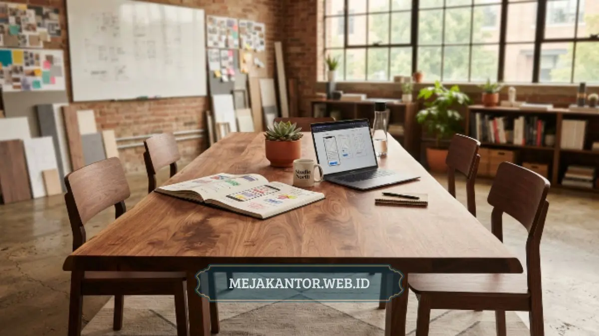

Ide meja rapat minimalis yang tepat mampu mengubah ruang meeting biasa menjadi ruang kolaborasi yang nyaman dan produktif bagi tim kreatif. Artikel ini merangkum 10 contoh desain meja rapat minimalis beserta cara memilihnya sesuai kebutuhan ruang.
- Meja rapat minimalis cocok untuk ruang meeting berukuran kecil hingga menengah
- Desain modular memberi fleksibilitas untuk berbagai format rapat
- Material kayu dan kombinasi metal banyak dipilih tim kreatif karena kesan hangat namun profesional
- Bentuk meja memengaruhi pola interaksi dan komunikasi selama rapat
- Pemilihan meja perlu mempertimbangkan kapasitas ruang, jumlah peserta, dan gaya kerja tim
Daftar Isi Artikel
- Mengapa Desain Meja Rapat Penting untuk Ruang Meeting Kolaboratif?
- Apa Saja Ciri Meja Rapat Minimalis yang Ideal?
- 10 Contoh Meja Rapat Minimalis untuk Tim Kreatif
- Bagaimana Cara Memilih Meja Rapat yang Tepat untuk Ruang Meeting?
- Kesalahan Umum dalam Memilih Meja Rapat
- Bagaimana Menyesuaikan Ukuran Meja Rapat dengan Jumlah Tim?
Mengapa Desain Meja Rapat Penting untuk Ruang Meeting Kolaboratif?
Desain meja rapat memengaruhi langsung kualitas komunikasi dan kenyamanan selama diskusi berlangsung. Tim kreatif umumnya bekerja dengan pola diskusi yang lebih cair, saling bertukar ide secara spontan, dan sering menggunakan alat bantu visual seperti laptop, sketsa, atau papan tulis kecil di atas meja.
Meja rapat yang terlalu kaku dari sisi bentuk maupun ukuran dapat membatasi cara tim berinteraksi. Sebaliknya, meja rapat minimalis dengan bentuk yang tepat baik oval, bulat, maupun persegi panjang dengan sudut membulat cenderung mendorong kontak mata yang lebih merata antarpeserta rapat, sehingga diskusi terasa lebih setara dan tidak didominasi satu arah pembicaraan.
Selain aspek fungsional, tampilan meja rapat juga menjadi bagian dari identitas visual perusahaan. Ruang meeting yang tertata rapi dengan meja bergaya minimalis memberi kesan profesional kepada klien atau mitra kerja yang berkunjung, sekaligus menciptakan suasana kerja yang lebih menyenangkan bagi karyawan.
Apa Saja Ciri Meja Rapat Minimalis yang Ideal?
Meja rapat minimalis ideal memiliki desain sederhana, garis bersih, dan fungsi yang jelas tanpa ornamen berlebihan. Ciri ini membuat meja mudah dipadukan dengan berbagai gaya interior kantor, mulai dari industrial hingga scandinavian.
Beberapa ciri utama yang biasa ditemukan pada meja rapat minimalis antara lain penggunaan warna netral seperti putih, abu-abu, natural kayu, atau hitam doff; kaki meja yang ramping namun kokoh; permukaan meja yang rata tanpa ukiran atau motif rumit; serta ukuran yang proporsional terhadap luas ruangan. Meja dengan desain semacam ini juga cenderung lebih mudah dirawat dan tahan lama karena konstruksinya yang sederhana namun kuat.
Selain itu, banyak meja rapat minimalis modern sudah dilengkapi fitur pendukung seperti jalur kabel tersembunyi (cable management), port charging terintegrasi, atau modul tambahan untuk perangkat presentasi. Fitur-fitur ini menambah nilai fungsional tanpa mengorbankan tampilan estetika yang bersih.
10 Contoh Meja Rapat Minimalis untuk Tim Kreatif
Berikut sepuluh contoh desain meja rapat minimalis yang umum diaplikasikan pada ruang meeting kolaboratif tim kreatif, lengkap dengan karakteristik masing-masing.
1. Meja Rapat Oval Kayu Solid
Bentuk oval mengurangi sudut tajam sehingga ruang terasa lebih lega dan aman untuk mobilitas peserta rapat. Material kayu solid memberi kesan hangat dan natural, cocok untuk studio desain atau agensi kreatif yang ingin menonjolkan suasana kerja yang tidak terlalu formal.
2. Meja Rapat Modular Persegi Panjang
Desain modular memungkinkan beberapa unit meja digabung atau dipisah sesuai kebutuhan kapasitas rapat. Model ini fleksibel untuk tim kreatif yang sering mengadakan rapat dengan jumlah peserta berubah-ubah, mulai dari diskusi kecil hingga presentasi tim besar.
3. Meja Rapat Bulat Kompak
Meja bulat berukuran kompak cocok untuk ruang meeting kecil atau ruang diskusi cepat (huddle room). Bentuk ini mendorong komunikasi dua arah yang lebih intens karena semua peserta duduk pada jarak pandang yang relatif sama.
4. Meja Rapat Kaki Besi dengan Top Kayu
Kombinasi kaki besi minimalis dan top kayu memberi kesan industrial modern. Konstruksi ini umumnya lebih ringan dari segi visual namun tetap kokoh menopang beban, cocok untuk kantor kreatif dengan konsep open space.
5. Meja Rapat Warna Putih Doff
Warna putih doff memberi kesan ruang yang lebih terang dan bersih, terutama pada ruang meeting berukuran terbatas. Model ini juga memudahkan kombinasi dengan kursi atau elemen dekorasi berwarna lain tanpa terlihat ramai.

6. Meja Rapat dengan Cable Management Terintegrasi
Fitur jalur kabel tersembunyi menjaga tampilan meja tetap rapi meski digunakan untuk rapat dengan banyak perangkat elektronik. Desain ini banyak dipilih tim kreatif yang sering melakukan presentasi digital atau video conference.
7. Meja Rapat Bentuk Boat Shape
Bentuk boat shape atau menyerupai perahu memberi ruang gerak lebih luas di bagian tengah meja dibanding meja persegi panjang biasa. Bentuk ini populer untuk ruang meeting berukuran menengah hingga besar.
8. Meja Rapat Minimalis dengan Laci Penyimpanan
Beberapa model meja rapat minimalis dilengkapi laci tipis di bagian bawah untuk menyimpan alat tulis atau dokumen kecil. Fitur ini menjaga permukaan meja tetap bersih dari barang yang tidak digunakan saat rapat berlangsung.
9. Meja Rapat Kombinasi Dua Warna (Duo Tone)
Kombinasi dua warna, misalnya top meja berwarna natural kayu dengan kaki berwarna hitam, memberi aksen visual tanpa terlihat berlebihan. Desain ini sering dipilih untuk menonjolkan identitas brand melalui warna korporat.
10. Meja Rapat Lipat atau Portable
Meja rapat lipat cocok untuk kantor kreatif dengan ruang terbatas yang membutuhkan fleksibilitas tata letak. Meja jenis ini mudah dipindahkan atau disimpan ketika ruang meeting perlu difungsikan untuk kegiatan lain.
Bagaimana Cara Memilih Meja Rapat yang Tepat untuk Ruang Meeting?
Pemilihan meja rapat yang tepat perlu mempertimbangkan luas ruangan, jumlah peserta rapat, dan gaya kerja tim secara bersamaan agar hasilnya optimal. Langkah pertama adalah mengukur luas ruang meeting yang tersedia, termasuk ruang gerak minimal di sekeliling meja agar peserta dapat duduk dan berdiri dengan nyaman.
Selanjutnya, pertimbangkan kapasitas rapat yang paling sering digunakan. Jika tim kreatif lebih sering mengadakan diskusi kecil dengan 4 hingga 6 orang, meja bulat atau oval berukuran kompak biasanya lebih sesuai dibanding meja panjang berkapasitas besar yang justru terasa kosong saat digunakan untuk rapat kecil.
Faktor lain yang perlu diperhatikan adalah material dan daya tahan meja. Material kayu solid atau kombinasi kayu dan besi umumnya lebih tahan lama dibanding material berbahan dasar partikel board tipis, terutama untuk penggunaan intensif harian. Pertimbangkan juga kebutuhan fitur tambahan seperti cable management, port charging, atau laci penyimpanan sesuai pola kerja tim.
Terakhir, sesuaikan gaya desain meja dengan konsep interior ruang secara keseluruhan. Ruang meeting dengan konsep industrial akan lebih serasi dengan meja berkaki besi, sedangkan ruang bernuansa scandinavian lebih cocok dipadukan dengan meja kayu natural berwarna terang.
Kesalahan Umum dalam Memilih Meja Rapat
Salah satu kesalahan umum adalah memilih meja rapat berdasarkan tampilan tanpa mempertimbangkan proporsi ruangan, sehingga meja terasa terlalu besar atau terlalu kecil dibanding luas ruang meeting. Kesalahan lain adalah mengabaikan kebutuhan ruang gerak di sekeliling meja, yang membuat peserta kesulitan keluar masuk kursi saat rapat berlangsung.
Banyak juga yang kurang memperhitungkan kebutuhan fitur teknis seperti jalur kabel atau titik colokan listrik sejak awal, sehingga harus menambah kabel eksternal yang mengganggu tampilan ruang setelah meja terpasang. Perencanaan kebutuhan fitur sebaiknya dilakukan bersamaan dengan pemilihan desain meja, bukan setelah proses pembelian selesai.
Kesalahan lain yang cukup sering terjadi adalah memilih material meja hanya berdasarkan harga tanpa mempertimbangkan intensitas penggunaan ruang meeting. Ruang meeting yang digunakan hampir setiap hari membutuhkan material dengan daya tahan lebih tinggi dibanding ruang meeting yang jarang dipakai, sehingga pemilihan material sebaiknya disesuaikan dengan frekuensi pemakaian, bukan semata-mata anggaran awal.
Bagaimana Menyesuaikan Ukuran Meja Rapat dengan Jumlah Tim?
Ukuran meja rapat sebaiknya disesuaikan dengan jumlah peserta yang paling sering hadir dalam rapat rutin, bukan berdasarkan kapasitas maksimal yang jarang terpakai. Tim kreatif dengan jumlah anggota tetap sekitar 4 hingga 6 orang umumnya lebih diuntungkan dengan meja berukuran kompak, karena ruang gerak antarpeserta tetap terjaga tanpa jarak yang terlalu jauh saat berdiskusi.
Sebaliknya, jika ruang meeting juga digunakan untuk presentasi lintas divisi dengan jumlah peserta yang lebih banyak, meja modular atau meja panjang dengan opsi tambahan kursi di sekelilingnya menjadi pilihan yang lebih fleksibel. Pendekatan ini menghindari kondisi ruang yang terlalu penuh saat kapasitas maksimal digunakan, sekaligus tetap nyaman ketika rapat berlangsung dengan jumlah peserta yang lebih sedikit.
Penting juga untuk memperhitungkan jarak antara meja dengan dinding atau perangkat pendukung ruangan seperti layar presentasi dan papan tulis. Jarak yang terlalu sempit dapat mengganggu visibilitas peserta terhadap materi presentasi, terutama pada posisi duduk di ujung meja.
Memilih ide meja rapat yang tepat untuk ruang meeting kolaboratif berarti menyeimbangkan aspek estetika, fungsi, dan kenyamanan penggunaan sehari-hari. Sepuluh contoh desain di atas dapat dijadikan referensi awal sebelum menentukan model yang paling sesuai dengan karakter tim kreatif dan luas ruang yang tersedia. Kunjungi juga katalog lengkap koleksi meja rapat custom untuk menemukan berbagai pilihan ukuran dan finishing terbaik.
Konsultasikan Kebutuhan Meja Rapat Tim Anda
Dapatkan rekomendasi ukuran, material, dan layout meja meeting kolaboratif custom terbaik untuk kantor Anda langsung dari tim profesional kami.
Konsultasi via WhatsApp 0889-8964-3555
Mega Anggun
Penulis Konten & Spesialis Penataan Interior Kantor. Berpengalaman dalam memberikan tips ergonomi dan memilih furnitur terbaik untuk menunjang produktivitas kerja.